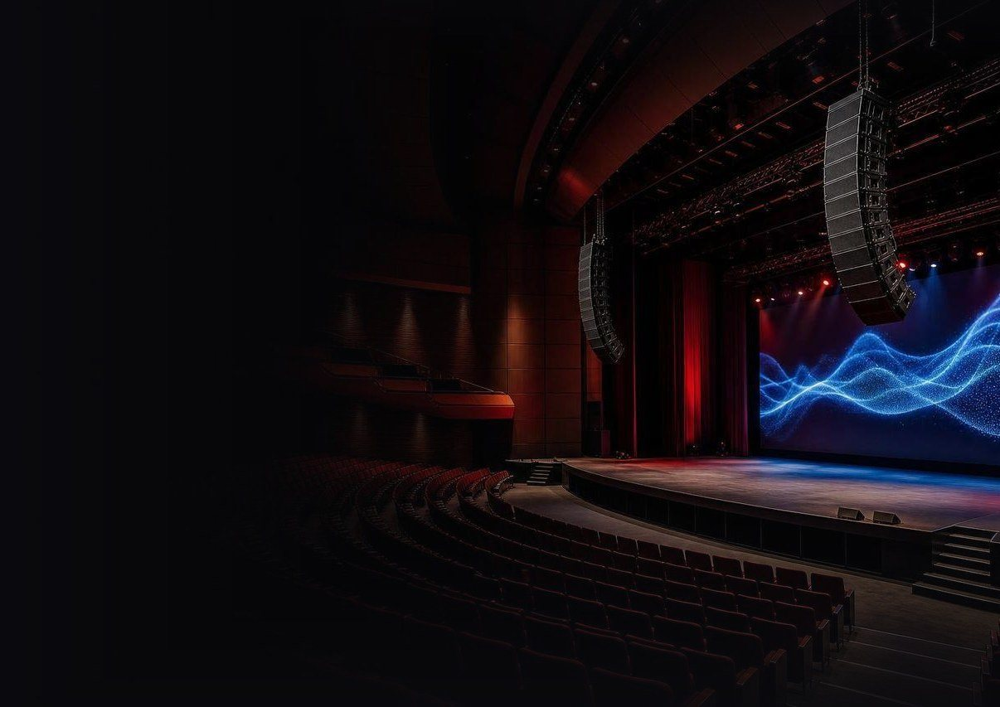
ConsultDesignDistributeIntegrateSupport
If it sounds good,
it’s Sound Creations.
COMPANY PROFILE2026 EDITION · SINCE 2004

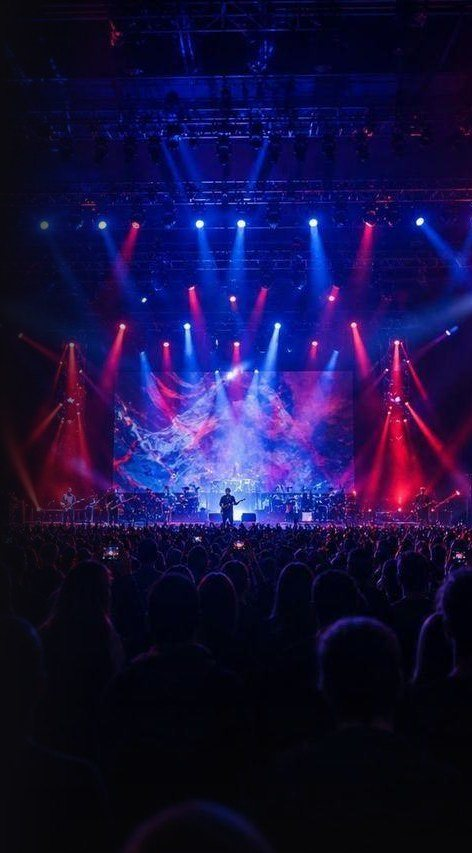
Who we are, how we work, what we have delivered and how to reach us.
From a specialist audio business in Nairobi to a regional integrator working across four countries, our growth has followed one idea: one team that takes every project from site visit to handover.
 OUR SHOWROOM · MPAKA PLAZA, WESTLANDS, NAIROBI
OUR SHOWROOM · MPAKA PLAZA, WESTLANDS, NAIROBIBegins as a specialist professional-audio company serving worship, events and commercial markets.
Incorporated as Sound Creations Ltd, formalising integration, distribution and support.
Kigali operations open; landmark work includes the RPF Rubavu Hall.
Operations begin in DRC Congo; Sound & Acoustics in the UAE with LC Acoustic, Dubai.
Authorised FANE partner for the region, with 850+ projects completed.
One partner across the full project life cycle, from the first site visit to long-term support, delivered by one accountable team.
We listen, assess the space and recommend the right approach.
Systems tailored to your room, application and budget.
Genuine products from trusted global brands, delivered reliably.
Installed, commissioned and tuned by our own team.
Training, servicing, genuine spares and rapid response.
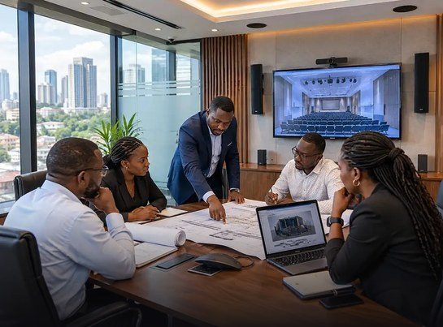
01Design and consultation across audio, acoustics, lighting and visuals, at every phase of your project.
 02
02Certified exclusive dealers for leading global brands, with reliable regional distribution and logistics.
 03
03Site mapping, system design, installation, commissioning, training and support for every audio and acoustic need.
 04
04Warranty management, genuine spare parts, servicing and technical support that keep your systems performing.
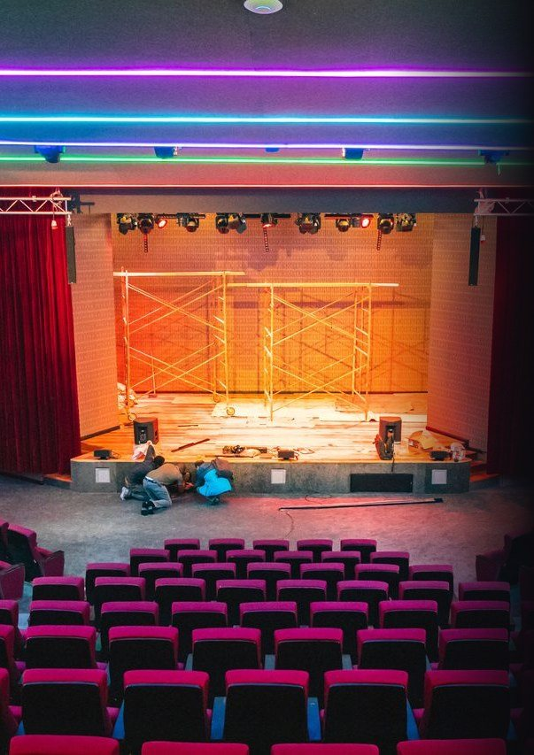
Powerful, intelligible and reliable sound systems, designed around your room and your application. We engineer complete systems, from loudspeaker simulation and system design to installation, tuning and operator training, so sound pressure is evenly distributed across every seat.
Speech clarity and musical power for services, concerts and events.
Loudspeaker systems simulated and specified for the room.
Digital consoles, multitrack recording and broadcast feeds.
Boardroom audio, paging and background music.
Complete pro-audio platforms, including roadshow trucks.
Commissioning, system tuning and operator training.
A round sanctuary with a central stage: full system simulations, dB Technologies Ingenia loudspeakers for equal coverage in every direction and a Midas Pro X console for multitrack recording.


Too little treatment leaves a room echoey; the wrong type makes it sound dull. We measure reverberation time, then specify the materials, quantities and positions that make speech and music clear, and design sound isolation separately.
Site surveys and tests: ENS, RT, TL and STI.
Find echo, focusing and noise problems at the source.
Specify materials, quantities and positions.
Ceilings, wall panels and sound isolation, cleanly installed.
Re-measure and fine-tune against international standards.
 MEASURE FIRST
MEASURE FIRST TREATED & VERIFIED
TREATED & VERIFIEDRockfon stone wool, Barrisol stretch ceilings and Asona seamless finishes.
Fabric-finished and decorative absorbers, diffusers and bespoke shapes.
Acoustic doors and isolation design for concurrent events.
Concave walls created “whispering gallery” and focusing effects. A diffuser design, a ceiling balanced between reflectors and NRC-rated absorbers, acoustic carpet and acoustic doors now deliver clear, even sound.

We take pride in showcasing work that has given new direction to quality audio, visual, lighting and acoustic solutions across Africa and the Middle East.
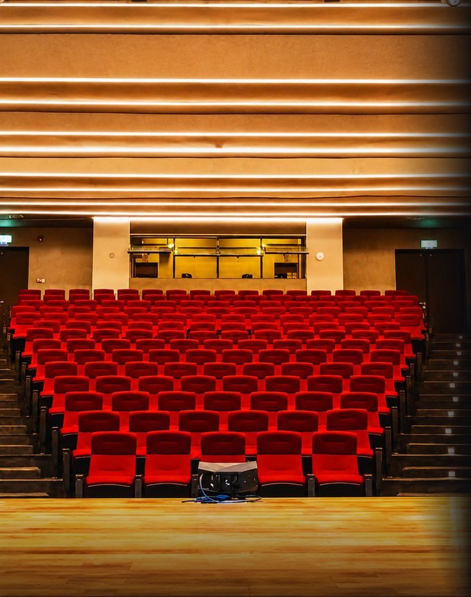

Auditorium · Nairobi, Kenya
The auditorium’s acoustic, audio and visual design was inspired by the school’s mission of nurturing the whole child. Side walls feature tree-shaped acoustic absorbers from TianGe Acoustic, adorned with rainbow LED lighting. A curved acoustic ceiling reflects sound from the stage evenly across the audience, complemented by acoustic seats, acoustic carpet and a fully treated back wall. The result unites acoustics, sound and light into a bespoke, inspiring space.

Multipurpose hall · Gisenyi, Rwanda
The hall’s concave walls naturally amplified reflections along their curved surfaces, creating “whispering gallery” and “focus” effects that concentrated speech and music in specific areas. An innovative diffuser design mitigates these defects, while the ceiling balances sound reflectors and absorbing panels with approved NRC values for uniform propagation from stage to audience. Acoustic carpet, fully treated walls and acoustic doors complete a controlled auditory environment.
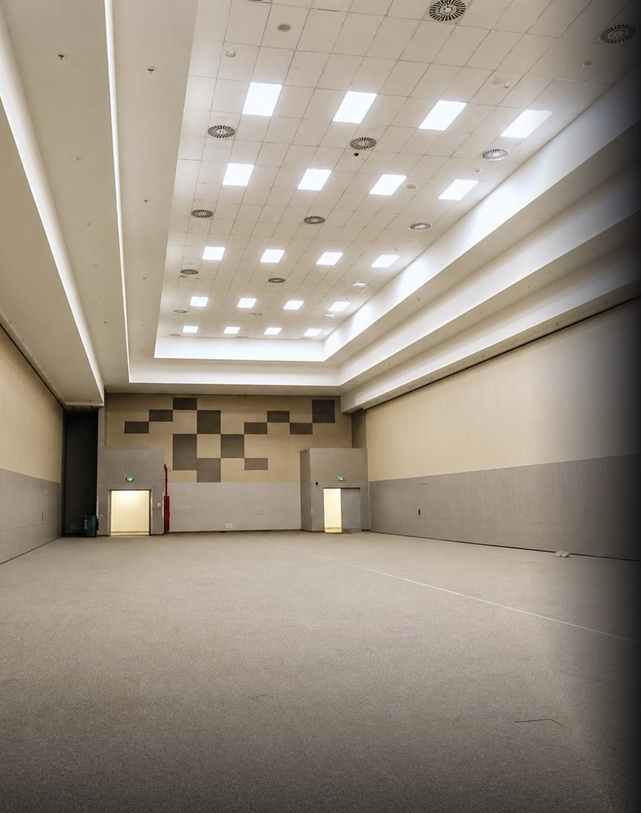
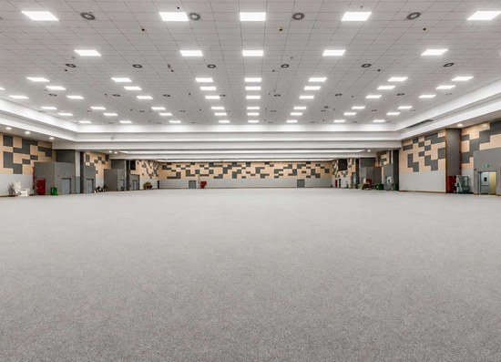
Expo venue · Westlands, Nairobi
Nairobi’s premier event venue offers 3,300 m² of column-free space within the Sarit Centre Phase III expansion. The brief: a multifunctional space able to host concurrent meetings, yet transform into a single hall. We treated a 7,000-capacity exhibition room and a 500-seat meeting area with precision-engineered wall panels and acoustic ceilings, and installed specialised acoustic doors that divide the exhibition hall into discrete rooms.
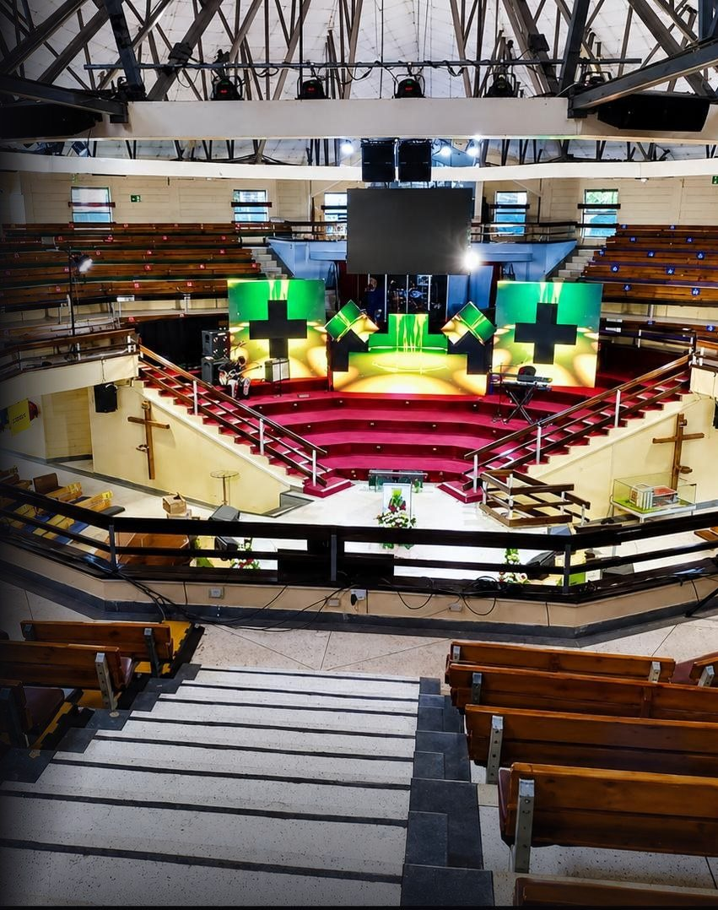
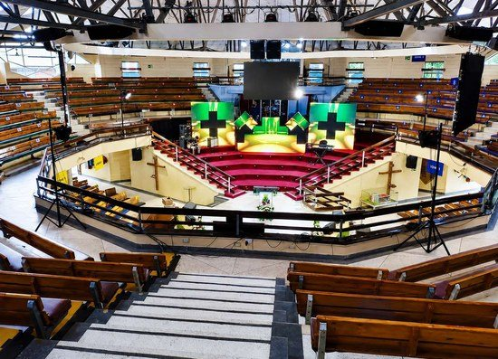
Main sanctuary · Nairobi, Kenya
One of Kenya’s leading mega churches, with a round 2,500-seat sanctuary and a central stage, needed sound that disperses equally in every direction, plus multitrack recording for live performance. Comprehensive system simulations forecast dispersion patterns and identified the optimal configuration for even SPL. Leveraging our dB Technologies partnership, we deployed Ingenia loudspeakers, with a 168-channel Midas Pro X console for expansive live recording.
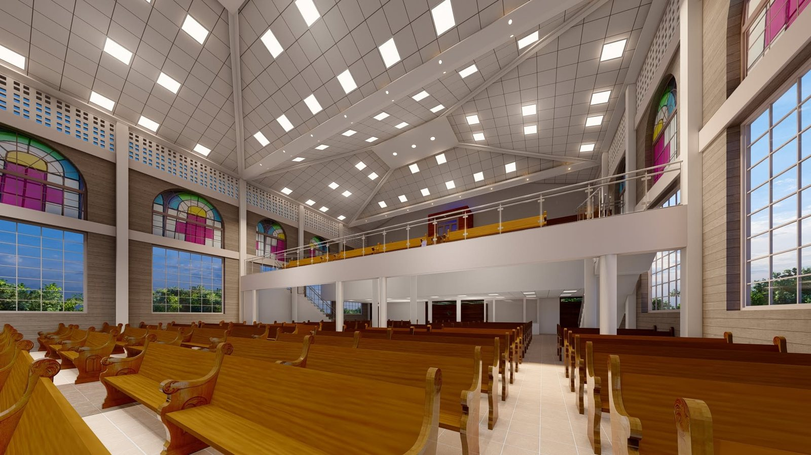
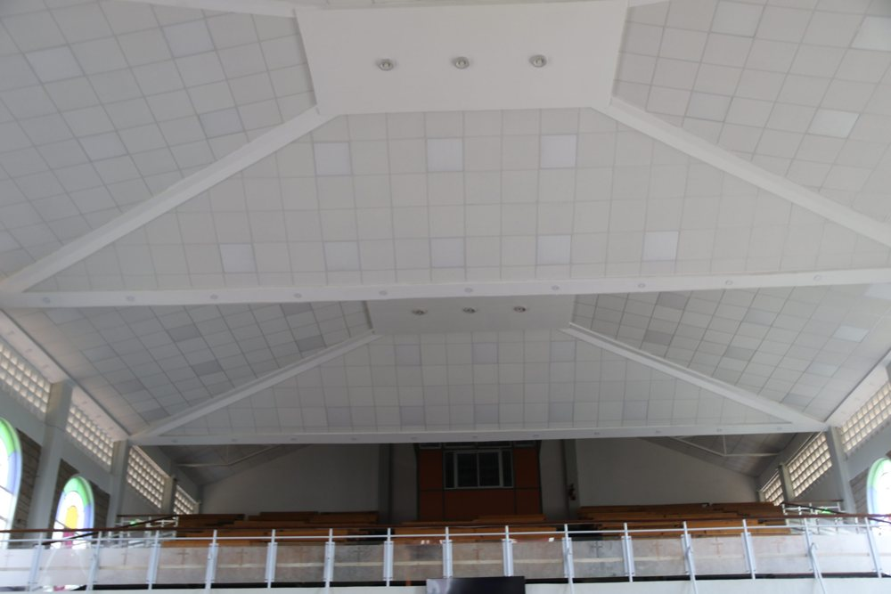
Worship space · Kahawa, Nairobi
The church’s high ceiling and extensive hard surfaces created strong reflections and reverberation, letting sound linger far longer than desired and blurring speech, music and amplified sound. We designed and installed an acoustic ceiling using Rockfon Arctic tiles as the key element of the sound-management strategy, adding absorption across the large overhead surface while preserving the room’s bright, open character. The congregation now experiences speech and music with greater clarity and comfort.
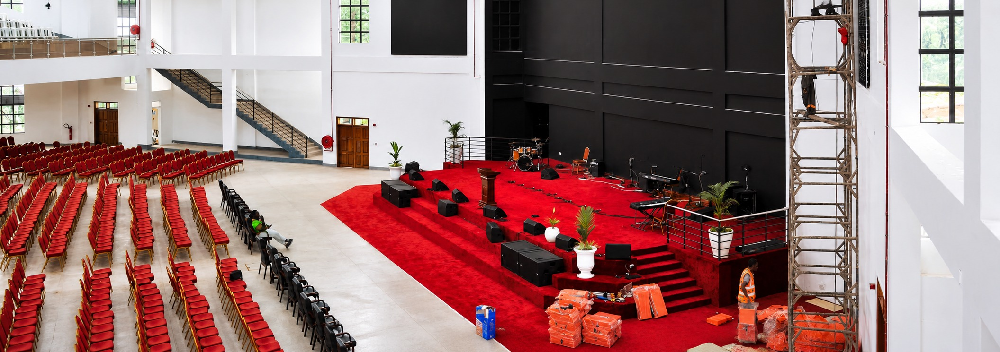
Christ Is The Answer Ministries · Nairobi, Kenya
Worship services at CITAM Buruburu demanded clear, powerful and even sound across a large, dynamic auditorium, including the under-balcony seating, serving both live worship and broadcast. We delivered a full dB Technologies T-Series system with dedicated subwoofers, under-balcony fills and stage monitors, run from an Allen & Heath Avantis console. The result is a scalable system that brings clarity, power and precision to every seat, live and on broadcast.
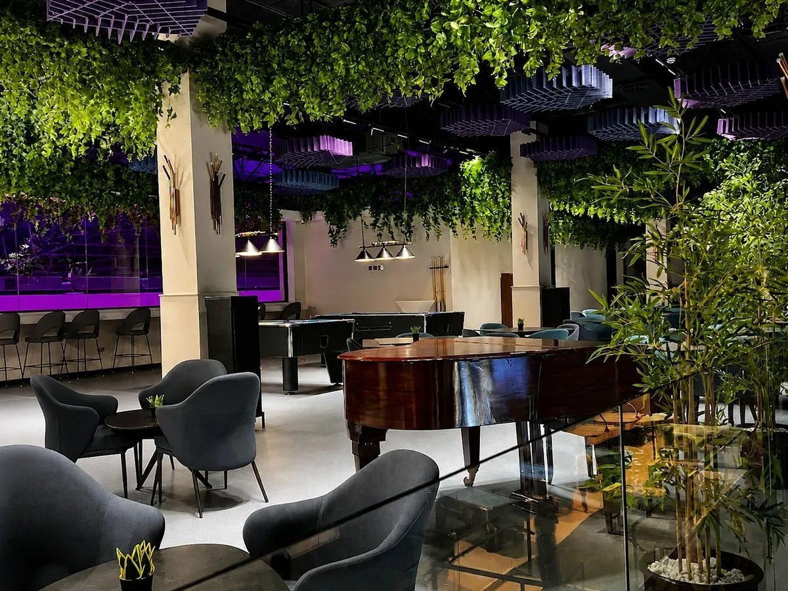
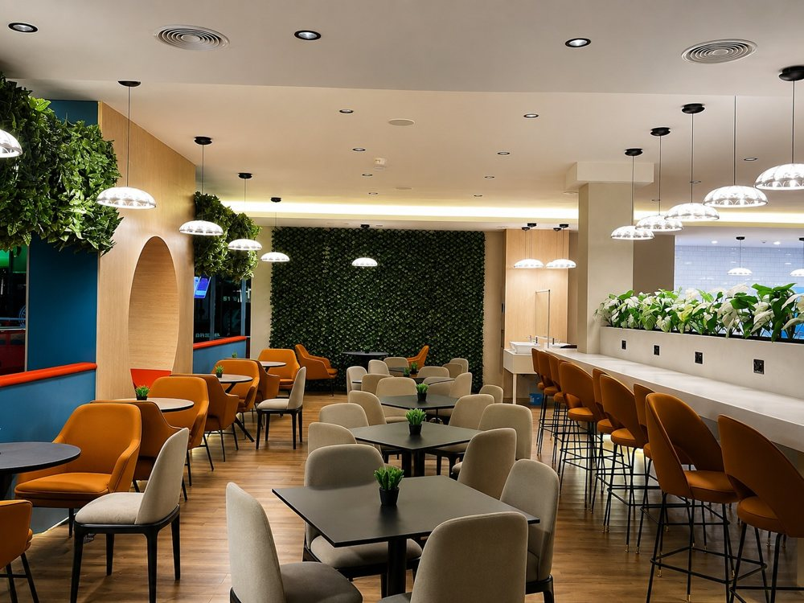
Entertainment venue · Prestige Plaza, Nairobi
Each of Playza’s spaces needed a different kind of sound: discreet background music in the offices and dining areas, and powerful, immersive sound in the bowling and bar lounge, all integrated into the venue’s interior. We designed and installed a multi-zone system, selecting the right loudspeaker for every area, with flexible control throughout. From the dining room to the lanes, the venue now enjoys clarity, consistency and an immersive entertainment experience.
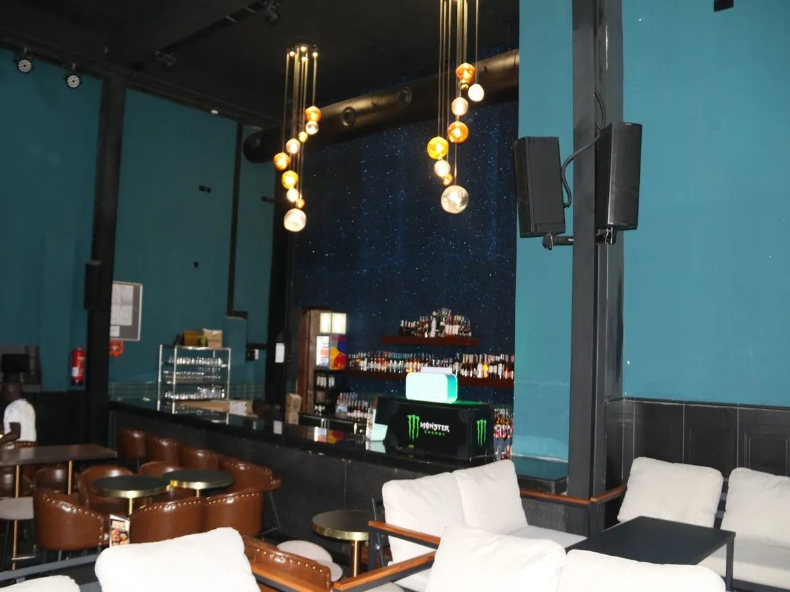
Nightclub · Kilimani, Nairobi
A high-energy club needs even coverage, high output, deep low-end and clarity that holds up at high levels. We designed and installed a complete dB Technologies system, positioning INGENIA 2, INGENIA 3 and OPERA 12 loudspeakers for consistent coverage across the venue, with SUB DVA S30N and SUB 918 subwoofers for the deep, powerful bass club music demands. Powerful sound. Precise coverage. Built for the club experience.
A selection of the 850+ projects we have delivered across worship, education, corporate and hospitality spaces.
Certified authorised dealer for a portfolio of 15 leading global brands, supplying direct to customers, to resellers at trade prices, and manufacturer-to-client.


Authorised FANE partner for the region. Professional loudspeaker components engineered in the UK since 1958.
Listed by Bose Professional as its Kenya sales office.
Listed by Allen & Heath as its distributor in Kenya.
Partnership supporting our UAE acoustics operation.
Offices in Kenya, Rwanda and DRC Congo, with distribution into Tanzania.
Dubai sourcing and logistics hub and UAE acoustics operation.
Direct manufacturer and supply partners across South and East Asia.
Headquartered in Nairobi, with operations across East and Central Africa and a sourcing hub in the Middle East.
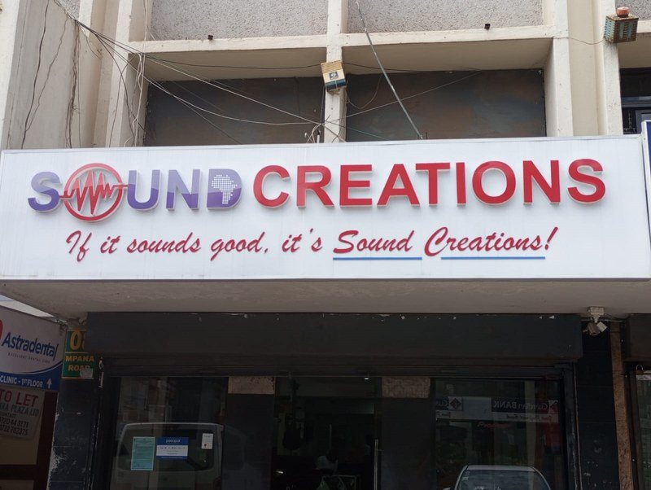
Head office · Mpaka Plaza, Westlands

Mpaka Plaza, Mpaka Road, Westlands, Nairobi
Kigali: sales, projects and support
Kinshasa: projects and support
Dubai: sourcing, logistics and acoustics
Tell us about your space and application. Our technical team will help you design, supply, install and support the right solution.
Mpaka Plaza, Mpaka Road
Westlands, Nairobi, Kenya
Mon – Fri: 9:00 am – 5:30 pm
Sat: 9:00 am – 1:30 pm · Sun: Closed